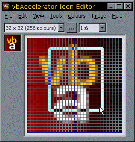

VB5 IconEditor Demonstration (126K)
VB5 IconEditor Demonstration (126K)
 VB5 IconEditor Full Source Code (211K)
VB5 IconEditor Full Source Code (211K)
 VB5 IconEditor OCX (43K)
VB5 IconEditor OCX (43K)
 VB6 IconEditor Demonstration (123K)
VB6 IconEditor Demonstration (123K)
 VB6 IconEditor Full Source Code (209K)
VB6 IconEditor Full Source Code (209K)
 VB6 IconEditor OCX (43K)
VB6 IconEditor OCX (43K)
 21 Mar 2000
21 Mar 2000
First Posted
 Subclassing Without The Crashes
Subclassing Without The Crashes

vbAccelerator Icon Editor Control
An all VB Icon Editor control
The vbAccelerator Icon Editor control is an all-VB control which allows Icon Editing facilities, with the aim of providing a similar level of facilities to the Icon Editor provided in Visual Studio. The control builds upon the cFileIcon Class to allow writing as well as reading icons, and adds full graphical editing facilites.
This control is the first of two parts: this part provides the graphical interface for drawing various shapes and making and manipulating selections; the second part of the project will be to provide partner control(s) which provide the tool and colour selections for the Icon Editor. For the purposes of this sample, tool and colour selections are currently made via the sample project's menu structure.
Features
This control supports:
- Multiple Undo and Redo Levels.
- Full clipboard support with Cut, Copy and Paste of selections.
- Various Image Manipulation functions, including rotate, flip, mirror and invert.
- Stretch or move selections around the image.
- Zoom the editor from actual size to 32x size.
- Full complement of drawing tools, including lines,rectangles,rounded rectangles, ellipses and flood filling.
- Support for multiple device images in the same icon. Add and Remove device images from icons.
Note that whilst the sample project UI restricts you to the standard icon sizes and colour depths (16x16,32x32,48x48 in 2,16 and 256 colours), the icon editor itself can handle any colour depth.
Documentation
Documentation for the vbAccelerator Icon Editor control's properties, methods and classes is available as an RTF. (Note that although this RTF was created for the VB6 version of the control, there are no differences between the VB5 and VB6 versions other than they use a different VB runtime and SSubTmr version).